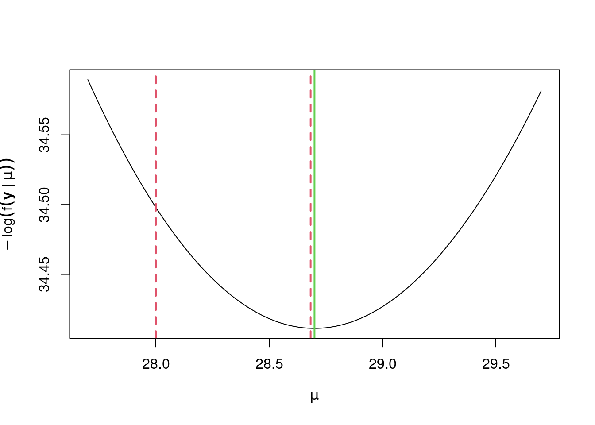

5 Optimisation
When fitting a statistical model we often use maximum likelihood. For this we have some likelihood function \(f(\mathbf{y} \mid \boldsymbol{\theta})\), data \(\mathbf{y} = (y_1, \ldots, y_n)\) and unknown but fixed parameters \(\boldsymbol{\theta} = (\theta_1, \ldots, \theta_p)\). We are then required to find \[ \hat{\boldsymbol{\theta}} = \arg\,\max_{\boldsymbol{\theta}} f(\mathbf{y} \mid \boldsymbol{\theta}). \] Sometimes, it will be possible to find \(\hat{\boldsymbol{\theta}}\) analytically, but sometimes not. The normal linear model is one example of the former, whereas the gamma distribution is an example of the latter.
Example 5.1 (Maximum likelihood estimation with the gamma distribution) Consider an independent sample of data \(\mathbf{y} = (y_1, \ldots, y_n)\), and suppose that these are modelling as Gamma\((\alpha, \beta)\) realisations, i.e. with pdf \[ f(y \mid \alpha, \beta) = \dfrac{\beta^\alpha}{\Gamma(\alpha)} y^{\alpha -1}e^{-\beta y} \quad {\text{ for }}y>0 \] where \(\alpha ,\beta >0\) and \(\Gamma()\) is the gamma function. The log-likelihood is then \[ \log f(\mathbf{y} \mid \alpha, \beta) = n \alpha \log \beta - n\log \Gamma(\alpha) + (\alpha - 1) \sum_{i = 1}^n \log y_i - \beta \sum_{i = 1}^n y_i. \] We can write its derivatives w.r.t. \((\alpha, \beta)\) in the vector \[ \begin{pmatrix} \dfrac{\partial \log f(\mathbf{y} \mid \alpha, \beta)}{\partial \alpha}\\[2ex] \dfrac{\partial \log f(\mathbf{y} \mid \alpha, \beta)}{\partial \beta} \end{pmatrix} = \begin{pmatrix} n \log \beta + \sum_{i = 1}^n \log y_i\\[2ex] n \alpha / \beta - \sum_{i = 1}^n y_i \end{pmatrix}. \] Unfortunately, we cannot analytically find both the maximum likelihood estimates, \((\hat \alpha, \hat \beta)\), i.e. we cannot find \(\alpha\) and \(\beta\) simultaneously that satisfy that \(\partial \log f(\mathbf{y} \mid \alpha, \beta) / \partial \alpha\) and \(\partial \log f(\mathbf{y} \mid \alpha, \beta) / \partial \beta\) are both zero. Fortunately, we can still find \((\hat \alpha, \hat \beta)\), but just not analytically.
When we cannot find \(\hat{\boldsymbol{\theta}}\) analytically, our next option is to find it numerically: that is, to adopt some kind of iterative process that we expect will ultimately result in the \(\hat{\boldsymbol{\theta}}\) that we want, as opposed to an estimate that we don’t want.
Although in maximum likelihood estimation interest lies in finding \(\boldsymbol{\theta}\) that maximises \(f(\mathbf{y} \mid \boldsymbol{\theta})\), it is much more common in mathematics to want to minimise a function. Fortunately, maximising \(f(\mathbf{y} \mid \boldsymbol{\theta})\) is equivalent to minimising \(-f(\mathbf{y} \mid \boldsymbol{\theta})\), i.e. \(f(\mathbf{y} \mid \boldsymbol{\theta})\) negated. Therefore, \[ \hat{\boldsymbol{\theta}} = \arg\,\min_{\boldsymbol{\theta}} \left\{-f(\mathbf{y} \mid \boldsymbol{\theta})\right\}. \] So that we can better follow the literature on numerical optimisation, we’ll just consider finding minima.
5.1 Root finding
We’ll start this chapter with a brief aside on root finding, because our main concern will be finding values that maximise (or minimise) functions. Consider some function \(f(x)\) for \(x \in \mathbb{R}\) and wanting to find the value of \(x\), \(\tilde x\) say, such that \(f(\tilde x) = 0\). Sometimes we can analytically find \(\tilde x\), but sometimes not. We’ll just consider the latter case where we’ll need to find \(\tilde x\) numerically, such as through some iterative process. We won’t go into the details of root-finding algorithms; instead we’ll just look at R’s function uniroot(). This is R’s go-to function for root finding. This chapter will just demonstrate its use by example.
Example 5.2 (Root-finding in R) Use uniroot() in R to find the root of
\[
f(x) = (x + 3)(x - 1)^2
\]
i.e. to find \(\tilde x\), where \(f(\tilde{x}) = 0\), given that \(\tilde x \in [-4, 4/3]\).
We’ll start by writing a function to evaluate \(f()\), which we’ll call f.
> f <- function(x) (x + 3) * (x - 1)^2Then we’ll call uniroot()
> uniroot(f, c(-4, 4.3))## $root
## [1] -2.999997
##
## $f.root
## [1] 4.501378e-05
##
## $iter
## [1] 7
##
## $init.it
## [1] NA
##
## $estim.prec
## [1] 6.103516e-05We see that its output includes various details. Most important are root, its estimate of \(\tilde x\), which is \(\tilde x \simeq -2.9999972\), and f.root, the value of \(f()\) at the root, i.e. \(f(\tilde x)\), which is \(f(\tilde x) \simeq 4.5013782\times 10^{-5}\) and is sufficiently close to zero that we should be confident that we’ve reached a root.
Remark. We can ask uniroot() to extend the search range for the root through its argument extendInt. Options are 'no', 'yes', 'downX' and 'upX', which correspond to not extending the range (the default) or allowing it to be extended to allow upward and downward crossings, just downward or just upward, respectively. (If we want to extend the search interval for the root, extendInt = 'yes' is usually the best option. Otherwise, we need to think about how \(f()\) behaves at the roots, i.e. whether it’s increasing or decreasing. See the help file for uniroot() for more details.) If we return to the above example and consider the search range \([-2, -1]\) instead, then by issuing
> uniroot(f, c(-2, -1), extendInt = 'yes')## $root
## [1] -2.999991
##
## $f.root
## [1] 0.0001449862
##
## $iter
## [1] 12
##
## $init.it
## [1] 6
##
## $estim.prec
## [1] 6.103516e-05we do still find the root, even though it’s outside of our specified range.
5.2 One-dimensional optimisation in R
We’ll only briefly look at how we can perform one-dimensional optimisation in R, which is through its optimize() function. As described by its help file, optimize() uses ‘a combination of golden section search and successive parabolic interpolation, and was designed for use with continuous functions’. We can instead use optimize() by calling optim(..., method = 'Brent'). The two are equivalent. By default optim() uses the Nelder-Mead polytope method, which we’ll cover in Section 5.4.7, which doesn’t usually work well in one dimension. The only reason I can see for using optim(..., method = 'Brent') over optimize() is that optim() is R’s preferred numerical optimisation function, and hence users my benefit from familiarity with its output, as opposed to that of optimize().
Example 5.3 (Numerical maximum likelihood estimation) Consider a sample of data \(y_1, \ldots, y_n\) as independent realisations from the \(\text{Exp}(\lambda)\) distribution with pdf
\[
f(y \mid \lambda) = \lambda \text{exp}(-\lambda y) \hspace{1cm} \text{for}~y > 0
\]
where \(\lambda > 0\) is an unknown parameter that we want to estimate. Its mle is \(1 / \bar y\), where \(\bar y = n^{-1} \sum_{i = 1}^n y_i\). Confirm this numerically in R using optimze() by assuming that the sample of data
\[
0.4, 0.5, 0.8, 1.8, 2.1, 3.7, 8.2, 10.6, 11.6, 12.8
\]
are independent \(\text{Exp}(\lambda)\) realisations.
By default optimize() will find the minimum, so we want to write a function that will evaluate the exponential distribution’s log-likelihood
\[
\log f(\mathbf{y} \mid \lambda) = n \log \lambda - \lambda \sum_{i = 1}^n y_i
\]
and then negate it. We’ll call this negloglik(lambda, y).
> negloglik <- function(lambda, y) {
+ # Function to evaluate Exp(lambda) neg. log likelihood
+ # lambda is a scalar
+ # y can be scalar or vector
+ # returns a scalar
+ -n * log(lambda) + lambda * sum(y)
+ }We then pass this on to optimize() with our sample of data, which we’ll call y.
> y <- c(0.4, 0.5, 0.8, 1.8, 2.1, 3.7, 8.2, 10.6, 11.6, 12.8)
> optimize(negloglik, lower = .1, upper = 10, y = y)## $minimum
## [1] 0.1904839
##
## $objective
## [1] 26.58228We see that R’s numerical maximum likelihood estimate of \(\lambda\) is 0.1904839, and the true value is \(1 / 5.25 \simeq 0.1904762\); so the two agree to five decimal places.
Remark. We can ask optimize() to be more precise through its tol argument, which has default tol = .Machine$double.eps^0.25. Smaller values of tol will give more accurate numerical estimates.
Remark. Calling optimise() is equivalent to calling optimize(), for those that don’t like American spellings of English words.
5.3 Newton’s method in one-dimension
Recall Theorem 4.1. The second-order approximation, if we swap from \(x\) to \(\theta\), \[ f(\theta) \simeq f(\theta_0) + (\theta - \theta_0)f'(\theta_0) + \dfrac{1}{2}(\theta - \theta_0)^2 f''(\theta_0) \] can be re-written as \[ f(\theta + \delta) \simeq f(\theta) + \delta f'(\theta) + \dfrac{1}{2} \delta^2 f''(\theta) \] for small \(\delta\) if we consider values near \(\theta\) for some twice-differentiable function \(f()\). If we’re trying to find \(\theta^* = \theta + \delta\) that minimises \(f(\theta + \delta)\) iteratively, then we want \(\theta^*\) to be an improvement on \(\theta\), i.e. \(f(\theta + \delta) < f(\theta)\). The best value of \(\theta + \delta t\) then therefore minimises \(f(\theta) + \delta f'(\theta) + \delta^2 f''(\theta) / 2\), and if we differentiate this w.r.t. \(\delta\) we get \[ f'(\theta) = - \delta f''(\theta) \] so that \[ \delta = - \dfrac{f'(\theta)}{f''(\theta)}. \] The above result is the basis for Newton’s method whereby, if we assume we have a value of \(\theta\) at iteration \(i\), then we update this at the next iteration so that \[ \theta_{i + 1} = \theta_i - \dfrac{f'(\theta_i)}{f''(\theta_i)}. \]
Remark. For the one dimensional case of Newton’s method, we will refer to \(p_i = - f'(\theta_i) / f''(\theta_i)\) as the Newton step.
Example 5.4 (Poisson maximum likelihood) Let \(Y_i\), \(i = 1, \ldots, n\), denote the numbers of cars passing the front of the Laver building between 9 and 10am on weekdays during term time. Assume that these are independent from one day to the next, and that \(Y_i \sim \text{Poisson}(\mu)\), for some unknown \(\mu\). The likelihood for a sample of data is given by \[ f(\mathbf{y} \mid \mu) = \prod_{i = 1}^n \dfrac{\mu^{y_i}\text{e}^{-\mu}}{y_i!} \] and for which we can write the log-likelihood as \[ \log f(\mathbf{y} \mid \mu) = -n \mu + \sum_{i = 1}^n y_i \log(\mu) - \sum_{i = 1}^n \log(y_i!). \] Of course, we can solve this analytically, which gives a maximum likelihood estimate of \(\hat \mu = \bar y = \sum_{i = 1}^n y_i / n\). Given the counts below
\[ 20, 21, 23, 25, 26, 26, 30, 37, 38, 41, \]
we find that \(\hat \mu = 28.7\). Use five iterations of Newton’s method to find \(\hat \mu\) iteratively, starting with \(\mu_0 = 28\), and comment on how many iterations are required to find \(\hat \mu\) to two decimal places.
We’ll start by reading in the data.
> y <- c(20, 21, 23, 25, 26, 26, 30, 37, 38, 41)Then we’ll find the first and second derivatives of \(-\log f(\mathbf{y} \mid \mu)\) w.r.t. \(\mu\), which are \(n - (\sum_{i = 1}^n y_i) / \mu\) and \((\sum_{i = 1}^n y_i) / \mu^2\), respectively. Then we’ll write functions in R, which we’ll call d1 and d2, to evaluate these analytical derivatives.
> d1 <- function(mu, y) {
+ # Function to first derivative w.r.t. lambda of
+ # Exp(lambda) neg. log likelihood
+ # lambda is a scalar
+ # y can be scalar or vector
+ # returns a scalar
+ length(y) - sum(y) / mu
+ }
>
> d2 <- function(mu, y) {
+ # Function to second derivative w.r.t. lambda of
+ # Exp(lambda) neg. log likelihood
+ # lambda is a scalar
+ # y can be scalar or vector
+ # returns a scalar
+ sum(y) / mu^2
+ }Then we’ll iterate estimates of \(\mu\) using Newton’s method.
> mu_i <- numeric(6)
> mu_i[1] <- 28
> for (i in 1:(length(mu_i) - 1))
+ mu_i[i + 1] <- mu_i[i] - d1(mu_i[i], y) / d2(mu_i[i], y)
> mu_i## [1] 28.00000 28.68293 28.69999 28.70000 28.70000 28.70000Finally, we’ll compare our estimate from Newton’s method with the true maximum likelihood estimate
> mu_its <- min(which(round(abs(mu_i - mu_hat), 2) == 0)) - 1and find that after 2 iterations our iterative estimate matches the true value of \(\hat \mu\) to three decimal places.
Let’s quickly look at how our iterations have gone. We’ll superimpose them on top of a plot of the negative log-likelihood as vertical, dotted red lines, with the true value of \(\hat \mu\) shown in green.
> mu_seq <- seq(mu_hat - 1, mu_hat + 1, l = 1e2)
> f_seq <- sapply(mu_seq, function(z) -sum(log(dpois(y, z))))
> plot(mu_seq, f_seq, type = "l",
+ xlab = expression(mu), ylab = expression(-log(f(bold(y) * " | " *mu))))
> abline(v = mu_hat, col = 3, lwd = 2)
> abline(v = mu_i[seq_len(mu_its)], col = 2, lty = 2, lwd = 2)
We see that Newton’s method has quickly homed in on the true value of \(\hat \mu\). Although this example is simple, and is one in which Newton’s method will typically perform well, Newton’s method is incredibly powerful, and will often perform well in a wide range of scenarios. Next we’ll consider multidimensional \(\boldsymbol{\theta}\).
5.4 Newton’s multi-dimensional method
5.4.1 Taylor’s theorem (multivariate)
The above extension to Taylor’s theorem in the univariate case applies to the multivariate case, after swapping \(\mathbf{x}\) for \(\boldsymbol{\theta}\), so that \[ f(\mathbf{\boldsymbol{\theta}}) \simeq f(\boldsymbol{\theta}_0) + \left[\nabla f(\boldsymbol{\theta}_0)\right]^\text{T} (\boldsymbol{\theta} - \boldsymbol{\theta}_0) + \dfrac{1}{2} (\boldsymbol{\theta} - \boldsymbol{\theta}_0)^\text{T} \left[\nabla^2 f(\boldsymbol{\theta}_0)\right] (\boldsymbol{\theta} - \boldsymbol{\theta}_0) \] can be re-written as
\[\begin{equation} f(\boldsymbol{\theta} + \boldsymbol{\Delta}) \simeq f(\boldsymbol{\theta}) + \left[\nabla f(\boldsymbol{\theta})\right]^\text{T} \boldsymbol{\Delta} + \dfrac{1}{2} \boldsymbol{\Delta}^\text{T} \left[\nabla^2 f(\boldsymbol{\theta})\right] \boldsymbol{\Delta}. \tag{5.1} \end{equation}\]
As similar argument to that above, i.e. finding \(\boldsymbol{\theta} + \boldsymbol{\Delta}\) that minimises equation (5.1), gives \[ \boldsymbol{\theta}_{i + 1} = \boldsymbol{\theta}_i - \left[\nabla^2 f(\boldsymbol{\theta}_i)\right]^{-1} \nabla f(\boldsymbol{\theta}_i) \] for which we require that \(\nabla^2 f(\boldsymbol{\theta}_i)\) is positive semi-definite in order to ensure that \(f(\boldsymbol{\theta}_{i + 1}) \leq f(\boldsymbol{\theta}_i)\).
Remark. For the multi-dimensional case of Newton’s method, we will refer to \(\mathbf{p}_i = - \left[\nabla^2 f(\boldsymbol{\theta}_i)\right]^{-1} \nabla f(\boldsymbol{\theta}_i)\) as the Newton step.
Remark. Sometimes it may turn out that \(\nabla^2 f(\boldsymbol{\theta}_i)\) is not positive semi-definite. Fortunately, this does not prohibit use of Newton’s method because we can perturb \(\nabla^2 f(\boldsymbol{\theta}_i)\) so that it is positive semi-definite, which will then guarantee that \(f(\boldsymbol{\theta}_{i + 1}) \leq f(\boldsymbol{\theta}_i)\). There are various options for perturbation, but a common choice is to use \(\nabla^2 f(\boldsymbol{\theta}_i) + \gamma \mathbf{I}_p\), where \(\mathbf{I}_p\) is the \(p \times p\) identity matrix, and we choose \(\gamma\) very small, and sequentially increase its value until \(\nabla^2 f(\boldsymbol{\theta}_i) + \gamma \mathbf{I}_p\) is positive semi-definite. For example, we might proceed through \(\gamma = 10^{-12}, 10^{-10}, \ldots\).
Example 5.5 (Weibull maximum likelihood: Newton's method) The Weibull distribution is sometimes used to model wind speeds. For a wind speed \(y\) its pdf is given by \[ f(y \mid \lambda,k) = \dfrac{k}{\lambda}\left(\dfrac{y}{\lambda}\right)^{k-1}e^{-(y/\lambda)^{k}} \quad \text{for}~y > 0 \] and where \(\lambda, k > 0\) are its parameters. (Note that this is the scale parameterisation of the Weibull distribution.) For observed wind speeds \(y_1, \ldots, y_n\) its corresponding log-likelihood is therefore \[ \log f(\mathbf{y} \mid \lambda, k) = n \log k - nk \log \lambda + (k - 1) \sum_{i = 1}^n \log y_i - \sum_{i = 1}^n \left(\frac{y_i}{\lambda}\right)^k. \] To implement Newton’s method, we need to find the first and second derivatives of \(\log f(\mathbf{y} \mid \lambda, k)\) w.r.t. \(\lambda\) and \(k\). The first derivatives are \[ \begin{pmatrix} \dfrac{\partial \log f(\mathbf{y} \mid \lambda, k)}{\partial \lambda}\\[2ex] \dfrac{\partial \log f(\mathbf{y} \mid \lambda, k)}{\partial k} \end{pmatrix} = \begin{pmatrix} \dfrac{k}{\lambda}\left(\sum_{i = 1}^n \left(\dfrac{y_i}{\lambda}\right)^k - n\right)\\[2ex] \dfrac{n}{k} - n \log \lambda + \sum_{i = 1}^n \log y_i - \sum_{i = 1}^n \left[\left(\dfrac{y_i}{\lambda}\right)^k \log \left(\dfrac{y_i}{\lambda}\right)\right] \end{pmatrix} \] and the second derivatives are stored in the matrix \[ \begin{pmatrix} \dfrac{\partial^2 \log f(\mathbf{y} \mid \lambda, k)}{\partial \lambda^2} & \dfrac{\partial^2 \log f(\mathbf{y} \mid \lambda, k)}{\partial \lambda \partial k}\\[2ex] \dfrac{\partial^2 \log f(\mathbf{y} \mid \lambda, k)}{\partial k \partial \lambda} & \dfrac{\partial^2 \log f(\mathbf{y} \mid \lambda, k)}{\partial k^2} \end{pmatrix} \] where
\[\begin{align*} \dfrac{\partial^2 \log f(\mathbf{y} \mid \lambda, k)}{\partial \lambda^2} &= \dfrac{k}{\lambda^2}\left(n - (1 + k) \sum_{i = 1}^n \left(\dfrac{y_i}{\lambda}\right)^k\right) \\ \dfrac{\partial^2 \log f(\mathbf{y} \mid \lambda, k)}{\partial \lambda \partial k} &= \dfrac{\partial^2 \log f(\mathbf{y} \mid \lambda, k)}{\partial k \partial \lambda} = \dfrac{1}{\lambda} \left(\sum_{i = 1}^n \left(\dfrac{y_i}{\lambda}\right)^k - n + k \sum_{i = 1}^n \left[\left(\dfrac{y_i}{\lambda}\right)^k \log\left(\dfrac{y_i}{\lambda}\right)\right]\right) \\ \dfrac{\partial^2 \log f(\mathbf{y} \mid \lambda, k)}{\partial k^2} &= -\dfrac{n}{k^2} - \sum_{i = 1}^n \left(\dfrac{y_i}{\lambda}\right)^k \left[\log\left(\dfrac{y_i}{\lambda}\right)\right]^2. \end{align*}\]
Consider the following wind speed measurements (in m/s) for the month of March.
> y0 <- c(3.52, 1.95, 0.62, 0.02, 5.13, 0.02, 0.01, 0.34, 0.43, 15.5,
+ 4.99, 6.01, 0.28, 1.83, 0.14, 0.97, 0.22, 0.02, 1.87, 0.13, 0.01,
+ 4.81, 0.37, 8.61, 3.48, 1.81, 37.21, 1.85, 0.04, 2.32, 1.06)Use five iterations of Newton’s method to estimate \(\hat \lambda\) and \(\hat k\), assuming the above wind speeds are independent from one day to the next and follow a Weibull distribution.
We’ll start by plotting the log-likelihood surface. We wouldn’t normally do this, but it can be useful to quickly judge whether the log-likelihood surface is well-behaved, such as being unimodal and approximately quadratic about its maximum.
Figure 5.1: Log-likelihood surface of Weibull distribution model for wind speed data with different \(\lambda\) and \(k\) values.
Then we’ll write functions weib_d1 and weib_d2 to evaluate the first and second derivatives of the Weibull distribution’s log-likelihood w.r.t. \(\lambda\) and \(k\). We’ll create these as functions of pars, the vector of parameters, y the vector of data, and mult, a multiplier of the final log-likelihood, which defaults to 1. Introducing mult makes it much simpler when we later need the negative log-likelihood, as we don’t have to write separate functions. Often when calculating derivatives w.r.t. multiple parameters, we find that calculations are repeated. It is worth avoiding repetition, and instead storing the results of any calculations that are used multiple times as objects. We’ll do this in the next few lines of code, storing the re-used objects as z1, z2, etc.
> weib_d1 <- function(pars, y, mult = 1) {
+ # Function to evaluate first derivative of Weibull log-likelihood
+ # pars is a vector
+ # y can be scalar or vector
+ # mult is a scalar defaulting to 1; so -1 returns neg. gradient
+ # returns a vector
+ n <- length(y)
+ z1 <- y / pars[1]
+ z2 <- z1^pars[2]
+ out <- numeric(2)
+ out[1] <- (sum(z2) - n) * pars[2] / pars[1] # derivative w.r.t. lambda
+ out[2] <- n * (1 / pars[2] - log(pars[1])) +
+ sum(log(y)) - sum(z2 * log(z1)) # w.r.t k
+ mult * out
+ }
>
> weib_d2 <- function(pars, y, mult = 1) {
+ # Function to evaluate second derivative of Weibull log-likelihood
+ # pars is a vector
+ # y can be scalar or vector
+ # mult is a scalar defaulting to 1; so -1 returns neg. Hessian
+ # returns a matrix
+ n <- length(y)
+ z1 <- y / pars[1]
+ z2 <- z1^pars[2]
+ z3 <- sum(z2)
+ z4 <- log(z1)
+ out <- matrix(0, 2, 2)
+ out[1, 1] <- (pars[2] / pars[1]^2) * (n - (1 + pars[2]) * z3) # w.r.t. (lambda^2)
+ out[1, 2] <- out[2, 1] <- (1 / pars[1]) * ((z3 - n) +
+ pars[2] * sum(z2 * z4)) # w.r.t. (lambda, k)
+ out[2, 2] <- -n/pars[2]^2 - sum(z2 * z4^2) # w.r.t. k^2
+ mult * out
+ }Next we’ll perform five iterations of Newton’s method, ensuring that mult = -1 so that we negate the log-likelihood in order for minima to be sought, although we see that reasonable convergence is achieved after two or three iterations.
> iterations <- 5
> xx <- matrix(0, iterations + 1, 2)
> dimnames(xx) <- list(paste('iter', 0:iterations), c('lambda', 'k'))
> xx[1, ] <- c(1.6, 0.6)
> for (i in 2:(iterations + 1)) {
+ gi <- weib_d1(xx[i - 1, ], y0, -1)
+ Hi <- weib_d2(xx[i - 1, ], y0, -1)
+ xx[i, ] <- xx[i - 1,] - solve(Hi, gi)
+ }
> xx## lambda k
## iter 0 1.600000 0.6000000
## iter 1 1.712945 0.5328618
## iter 2 1.866832 0.5375491
## iter 3 1.889573 0.5375304
## iter 4 1.890069 0.5375279
## iter 5 1.890069 0.5375279Finally we can plot the course of the iterations, and see visually that Newton’s method quickly homes in on the negative log-likelihood surface’s minimum.
Figure 5.2: Five iterations of Newton’s method to find Weibull maximum likelihood estimates.
5.4.2 Newton’s method in R
Above we put together some simple code that implemented Newton’s method. However, there are various ways of performing Newton’s method in R. Here we just take a look at nlminb(), which is described as ‘Unconstrained and box-constrained optimization using PORT routines’.
We can use our functions weib_d1 and weib_d2 from earlier for the first and second derivatives of the negative log-likelihood w.r.t. \(\lambda\) and \(k\). We now just need a function to evaluate the negative log-likelihood itself. We’ll call this weib_d0. Note, though, that it’s important to ensure that invalid parameters, i.e. \(\lambda \leq 0\) and/or \(k \leq 0\) are avoided. Below we achieve this by setting the likelihood to be extremely low (\(10^{-8}\)) for such parts of parameter space.
> weib_d0 <- function(pars, y, mult = 1) {
+ # Function to evaluate Weibull log-likelihood
+ # pars is a vector
+ # y can be scalar or vector
+ # mult is a scalar defaulting to 1; so -1 returns neg. log likelihood
+ # returns a scalar
+ n <- length(y)
+ if (min(pars) <= 0) {
+ out <- -1e8
+ } else {
+ out <- n * (log(pars[2]) - pars[2] * log(pars[1])) +
+ (pars[2] - 1) * sum(log(y)) - sum((y / pars[1])^pars[2])
+ }
+ mult * out
+ }
> nlminb(c(1.6, 0.6), weib_d0, weib_d1, weib_d2, y = y0, mult = -1)## $par
## [1] 1.8900689 0.5375279
##
## $objective
## [1] 54.95316
##
## $convergence
## [1] 0
##
## $iterations
## [1] 5
##
## $evaluations
## function gradient
## 6 6
##
## $message
## [1] "relative convergence (4)"We see that nlminb’s output is a list comprising the parameter estimates (par), the final value of the negative log-likelihood (objective) whether the algorithm has converged (convergence, where 0 indicates successful convergence), the number of iterations before convergence was achieved (iterations), how many times the function and gradient were evaluated (evaluations), and then message provides further details on the type of convergence achieved.
5.4.3 Gradient descent
If we consider small \(\boldsymbol{\Delta}\) in (5.1) then we get the first order approximation \[\begin{equation*} f(\boldsymbol{\theta} + \boldsymbol{\Delta}) \simeq f(\boldsymbol{\theta}) + \left[\nabla f(\boldsymbol{\theta})\right]^\text{T} \boldsymbol{\Delta}, \tag{5.2} \end{equation*}\] which is appropriate for small \(\boldsymbol{\Delta}\). The concept behind gradient descent is simple: we want to minimise \(\left[\nabla f(\boldsymbol{\theta})\right]^\text{T} \boldsymbol{\Delta}\), which requires that we follow the direction of \(-\nabla f(\boldsymbol{\theta})\). To allow for different magnitudes of gradient, we will choose \[ \boldsymbol{\Delta} = - \dfrac{\nabla f(\boldsymbol{\theta})}{||\nabla f(\boldsymbol{\theta})||}. \] Now that we know the direction in which we want to head, we need to know how far in that direction we should go. For this we’ll consider some \(\alpha > 0\), so that \[\begin{align*} f(\boldsymbol{\theta} + \boldsymbol{\Delta}) &\simeq f(\boldsymbol{\theta}) - \alpha \dfrac{\left[\nabla f(\boldsymbol{\theta})\right]^\text{T} \left[\nabla f(\boldsymbol{\theta})\right]}{||\nabla f(\boldsymbol{\theta})||},\\ &= f(\boldsymbol{\theta}) - \alpha ||\nabla f(\boldsymbol{\theta})||, \tag{5.3} \end{align*}\] which means that \(\boldsymbol{\Delta} = - \nabla f(\boldsymbol{\theta}) / ||\nabla f(\boldsymbol{\theta})||\) brings a decrease in \(f(\boldsymbol{\theta} + \boldsymbol{\Delta})\) that’s proportional to \(||\nabla f(\boldsymbol{\theta})||\) for \(\alpha > 0\), and is the fastest possible rate at which \(f(\boldsymbol{\theta} + \boldsymbol{\Delta})\) can decrease.
Example 5.6 (Weibull maximum likelihood: gradient descent) Repeat Example 5.5 using gradient descent with \(\alpha = 0.5\) and \(\alpha = 0.1\), using 30 iterations for each. Comment on how these compare to each other, and to Newton’s method.
> alpha_seq <- c(.5, .1)
> iterations <- 30
> for (j in 1:length(alpha_seq)) {
+ xx2 <- matrix(0, iterations + 1, 2)
+ dimnames(xx2) <- list(paste('iter', 0:iterations), c('lambda', 'k'))
+ xx2[1, ] <- c(1.6, 0.6)
+ for (i in 2:(iterations + 1)) {
+ gi <- weib_d1(xx2[i - 1, ], y0, mult = -1)
+ gi <- gi / crossprod(gi)[1, 1]
+ xx2[i, ] <- xx2[i - 1,] - alpha_seq[j] * gi
+ }
+ print(list(paste('alpha', alpha_seq[j], sep = ' = '), tail(xx2, 5)))
+ }## [[1]]
## [1] "alpha = 0.5"
##
## [[2]]
## lambda k
## iter 26 2.010166 -0.03896600
## iter 27 2.010166 -0.03960079
## iter 28 2.010166 -0.04024614
## iter 29 2.010166 -0.04090225
## iter 30 2.010166 -0.04156929
##
## [[1]]
## [1] "alpha = 0.1"
##
## [[2]]
## lambda k
## iter 26 1.771195 0.5611662
## iter 27 1.772881 0.5440336
## iter 28 1.780112 0.5015718
## iter 29 1.780158 0.5164447
## iter 30 1.781202 0.5447801Above we give the final five iterations for each value of \(\alpha\), and see that convergence to \(\hat \lambda\) and \(\hat k\) has not been achieved after 30 iterations for \(\alpha = 0.5\) and for \(\alpha = 0.1\), whereas Newton’s method had essentially converged after four or five iterations. Worse still, if we allowed more iterations, we’d see that both eventually diverge away from \(\hat \lambda\) and \(\hat k\), as opposed to converging. The undesirable course of these iterations can be seen in the following plot.
Figure 5.3: Iterations of the gradient descent algorithm with \(\alpha = 0.5\) and \(\alpha = 0.1\).
5.4.4 Line search
Above we see that, for fixed \(\alpha\), gradient descent has diverged, i.e. not homed in on the minimum of \(f()\). This often happens with gradient descent. A solution, which also applies to Newton’s method, is to use a line search. Consider Newton’s method and a search direction of \(\mathbf{p}_i = - \left[\nabla^2 f(\boldsymbol{\theta}_i)\right]^{-1} \nabla f(\boldsymbol{\theta}_i)\). We want \(f(\boldsymbol{\theta}_i + \mathbf{p}_i) < f(\boldsymbol{\theta}_i)\) in order for \(\boldsymbol{\theta}_i + \mathbf{p}_i\) to be an improvement on \(\boldsymbol{\theta}_i\). If we employ a line search, we instead consider \(\boldsymbol{\theta}_i + \alpha \mathbf{p}_i\) for some \(\alpha > 0\) and ideally want \(\alpha\) to minimise \(f(\boldsymbol{\theta}_i + \alpha \mathbf{p}_i)\). In practice this can be done informally, through the following process.
- Choose an initial value for \(\alpha\), \(\alpha_0\), say, and set \(j = 0\).
- Evaluate \(f(\boldsymbol{\theta}_i + \alpha_j \mathbf{p}_i)\).
- Set \(j = j + 1\).
- Set \(\alpha_j = \rho \alpha_{j - 1}\), for \(0 < \rho < 1\).
- Evaluate \(f(\boldsymbol{\theta}_i + \alpha_j \mathbf{p}_i)\).
- If \(f(\boldsymbol{\theta}_i + \alpha_j \mathbf{p}_i) < f(\boldsymbol{\theta}_i + \alpha_{j - 1} \mathbf{p}_i)\), repeat steps 3 to 6 until \(f(\boldsymbol{\theta}_i + \alpha_j \mathbf{p}_i) \geq f(\boldsymbol{\theta}_i + \alpha_{j - 1} \mathbf{p}_i)\).
- Choose \(\alpha = \alpha_{j - 1}\).
We can implement this in R.
> line_search <- function(theta, p, f, alpha0 = 1, rho = .5, ...) {
+ best <- f(theta, ...)
+ cond <- TRUE
+ while (cond & alpha0 > .Machine$double.eps) {
+ prop <- f(theta + alpha0 * p, ...)
+ cond <- prop >= best
+ if (!cond)
+ best <- prop
+ alpha0 <- alpha0 * rho
+ }
+ alpha <- alpha0 / rho
+ alpha
+ }Remark. Notice the use of the ... argument here, which passes any extra arguments given to line_search() on to f(), and hence avoids the need to include f()’s arguments in line_search(). This is useful because it makes line_search() applicable to any f().
Example 5.7 (Weibull maximum likelihood: gradient descent with line search) Repeat Example 5.5 using gradient descent but with line search and 200 iterations.
The following code repeats Example 5.6 with the addition of line search.
> iterations <- 200
> xx2 <- matrix(0, iterations + 1, 2)
> dimnames(xx2) = list(paste('iter', 0:iterations), c('lambda', 'k'))
> xx2[1, ] <- c(1.6, 0.6)
> for (i in 2:(iterations + 1)) {
+ gi <- weib_d1(xx2[i - 1, ], y0, mult = -1)
+ gi <- gi / crossprod(gi)[1, 1]
+ alpha_i <- line_search(xx2[i - 1, ], -gi, weib_d0, y = y0, mult = -1)
+ xx2[i, ] <- xx2[i - 1,] - alpha_i * gi
+ }
> tail(xx2, 5)## lambda k
## iter 196 1.888392 0.5374135
## iter 197 1.888417 0.5374937
## iter 198 1.888463 0.5374345
## iter 199 1.888489 0.5374891
## iter 200 1.888556 0.5374245We see that line search does at least bring us convergence of the parameter estimates, but that it’s also very slow, as the following plot shows.
Figure 5.4: 200 iterations of the gradient descent algorithm using line search.
Remark. Here we’ve adopted an informal approach to line search. A more formal approach is to choose \(\alpha\) so that it satisfies the Wolfe conditions. A step length \(\alpha_k\) is said to satisfy the Wolfe conditions, restricted to the direction \(\mathbf{p}_i\), if the following two inequalities hold: \[\begin{align*} \textbf{i)} & \quad f(\boldsymbol{\theta}_i + \alpha_i \mathbf{p}_i) \leq f(\boldsymbol{\theta}_i) + c_1 \alpha_i \mathbf{p}_i^{\mathrm{T}} \nabla f(\boldsymbol{\theta}_i), \\[6pt] \textbf{ii)} & \quad -\mathbf{p}_i^{\mathrm{T}} \nabla f(\boldsymbol{\theta}_i + \alpha_i \mathbf{p}_i) \leq -c_2\mathbf{p}_i^{\mathrm{T}} \nabla f(\boldsymbol{\theta}_i), \end{align*}\] with \(0 < c_1 < c_2 < 1\). \(c_1\) is usually chosen to be quite small while \(c_2\) is much larger; Nocedal and Wright (2006, sec. 6.1) give example values of \(c_1 = 10^{-4}\) and \(c_2 = 0.9\) for Newton or quasi-Newton methods.
5.4.5 Quasi-Newton methods
Between Newton’s method and steepest descent lie quasi-Newton methods. These essentially employ Newton’s method, but with some approximation to the Hessian matrix. Instead of the search direction used in Newton’s method, \(\mathbf{p}_i = - \left[\nabla^2 f(\boldsymbol{\theta}_i)\right]^{-1} \nabla f(\boldsymbol{\theta}_i)\), consider the search direction \(\tilde{\mathbf{p}}_i = - \mathbf{H}_i^{-1} \nabla f(\boldsymbol{\theta}_i)\), where \(\mathbf{H}_i\) is an approximation to the Hessian matrix \(\nabla^2 f(\boldsymbol{\theta}_i)\) at the \(i\)th iteration. We might, for example, want to avoid explicitly calculating \(\nabla^2 f(\boldsymbol{\theta}_i)\) because it’s a matrix that’s sufficiently more difficult to calculate than the gradient (e.g. mathematically, or just in terms of time), so that using an approximation to the Hessian matrix (provided it is an adequate approximation) gives a more efficient approach to optimisation than using the Hessian matrix itself. We should typically expect quasi-Newton methods to converge slower than Newton’s method, but provided that convergence isn’t too much slower or less reliable, then we may prefer this over analytically forming the Hessian matrix.
In MTH3045 we shall consider the so-called BFGS (shorthand for Broyden–Fletcher–Goldfarb–Shanno) quasi-Newton algorithm. Put simply, at iteration \(i\), the BFGS algorithm assumes that \[ \nabla^2 f(\boldsymbol{\theta}_{i}) \simeq \mathbf{H}_{i} = \mathbf{H}_{i - 1} + \dfrac{\mathbf{y}_i \mathbf{y}_i^{\mathrm{T}}}{\mathbf{y}_i^{\mathrm{T}} \mathbf{s}_i} - \dfrac{(\mathbf{H}_{i - 1})^{-1} \mathbf{s}_i \mathbf{s}_i^{\mathrm{T}} (\mathbf{H}_{i - 1})^{-T}}{\mathbf{s}_i^{\mathrm{T}} (\mathbf{H}_{i - 1})^{-1} \mathbf{s}_i}, \] where \(\mathbf{s}_i = \boldsymbol{\theta}_{i} - \boldsymbol{\theta}_{i - 1}\) and \(\mathbf{y}_i = \nabla f(\boldsymbol{\theta}_{i}) - \nabla f(\boldsymbol{\theta}_{i - 1})\). Hence the BFGS algorithm uses differences in the gradients of successive iterations to approximate the Hessian matrix. We now note that we use \(\mathbf{H}_i\) in \(\mathbf{p}_i = -[\mathbf{H}_i]^{-1} \nabla f(\boldsymbol{\theta}_i)\). We can avoid solving this system of linear equations by instead directly obtaining \([\mathbf{H}_i]^{-1}\) through \[ [\mathbf{H}_{i}]^{-1} = \left(\mathbf{I}_p - \dfrac{\mathbf{s}_i \mathbf{y}_i^\text{T}}{\mathbf{y}_i^\text{T}\mathbf{s}_i}\right) [\mathbf{H}_{i - 1}]^{-1} \left(\mathbf{I}_p - \dfrac{\mathbf{y}_i \mathbf{s}_i^\text{T}}{\mathbf{s}_i^\text{T}\mathbf{y}_i}\right) + \dfrac{\mathbf{s}_i \mathbf{s}_i^\text{T}}{\mathbf{y}_i^\text{T} \mathbf{y}_i}. \]
The following R function updates \([\mathbf{H}_{i - 1}]^{-1}\) to \([\mathbf{H}_{i}]^{-1}\) given \(\boldsymbol{\theta}_i\), \(\boldsymbol{\theta}_{i - 1}\), \(\nabla f(\boldsymbol{\theta}_{i - 1})\) and \(\nabla f(\boldsymbol{\theta}_i)\), which are the arguments x0, x1, g0 and g1, respectively.
> iH1 <- function(x0, x1, g0, g1, iH0) {
+ # Function to update Hessian matrix
+ # x0 and x1 are p-vectors of second to last and last estimates, respectively
+ # g0 and g1 are p-vectors of second to last and last gradients, respectively
+ # iH0 is previous estimate of p x p Hessian matrix
+ # returns a p x p matrix
+ s0 <- x1 - x0
+ y0 <- g1 - g0
+ denom <- sum(y0 * s0)
+ I <- diag(rep(1, 2))
+ pre <- I - tcrossprod(s0, y0) / denom
+ post <- I - tcrossprod(y0, s0) / denom
+ last <- tcrossprod(s0) / denom
+ pre %*% iH0 %*% post + last
+ }Example 5.8 (Weibull maximum likelihood: BFGS) Repeat Example 5.5 using the BFGS method. Comment on how it compares to Newton’s method.
The following code implements five iterations of the BFGS method.
> iterations <- 5
> xx <- matrix(0, iterations + 1, 2)
> dimnames(xx) <- list(paste('iter', 0:iterations), c('lambda', 'k'))
> xx[1, ] <- c(1.6, 0.6)
> g <- iH <- list()
> for (i in 2:(iterations + 1)) {
+ g[[i]] <- weib_d1(xx[i - 1, ], y0, mult = -1)
+ if (sqrt(sum(g[[i]]^2)) < 1e-6)
+ break
+ if (i == 2) {
+ iH[[i]] <- diag(1, 2)
+ } else {
+ iH[[i]] <- iH1(xx[i - 2, ], xx[i - 1, ], g[[i - 1]], g[[i]], iH[[i - 1]])
+ }
+ search_dir <- -(iH[[i]] %*% g[[i]])
+ alpha <- line_search(xx[i - 1, ], search_dir, weib_d0, y = y0, mult = -1)
+ xx[i, ] <- xx[i - 1,] + alpha * search_dir
+ }Our estimates at each iteration are
> xx## lambda k
## iter 0 1.600000 0.6000000
## iter 1 1.615241 0.4736904
## iter 2 2.097571 0.5295654
## iter 3 1.918661 0.5356343
## iter 4 1.881726 0.5375145
## iter 5 1.890167 0.5374986and we see that we need two more iterations than Newton’s method to reach convergence to three decimal places.
Finally, we’ll plot the course of the iterations
Figure 5.5: Five iterations of the MFGS quasi-Newton method.
and see that we’ve taken a slightly less direct route to the minimum than Newton’s method.
5.4.6 Quasi-Newton methods in R
There are various options for performing quasi-Newton methods in R. For these, we just need to supply the function to be minimised and its gradient. The first option is to use nlminb() again: if we don’t supply a function to evaluate the Hessian, then nlminb() uses a quasi-Newton approach. The alternative – and possibly preferred – option is to use optim() with option method = 'BFGS'. The following two lines of code repeat the above example that used Newton’s method in R, using nlminb() and then optim().
> nlminb(c(1.6, 0.6), weib_d0, weib_d1, y = y0, mult = -1)## $par
## [1] 1.8900689 0.5375279
##
## $objective
## [1] 54.95316
##
## $convergence
## [1] 0
##
## $iterations
## [1] 7
##
## $evaluations
## function gradient
## 9 8
##
## $message
## [1] "relative convergence (4)"> optim(c(1.6, 0.6), weib_d0, weib_d1, y = y0, mult = -1, method = 'BFGS')## $par
## [1] 1.8900632 0.5375283
##
## $value
## [1] 54.95316
##
## $counts
## function gradient
## 14 6
##
## $convergence
## [1] 0
##
## $message
## NULLWe see that nlminb() and optim() have essentially given the same value of par, i.e. for \(\hat \lambda\) and \(\hat k\), which is reassuring. Note that nlminb() has used fewer function evaluations than optim(). We won’t go into the details of the cause of this, but it is worth noting that the functions use different stopping criteria, and slightly different variants of the BFGS algorithm. Note also that nlminb() has used three more function evaluations with the BFGS method than with Newton’s method, which is typically the case, and reflects the improved convergence achieved by using the actual Hessian matrix with Newton’s method, as opposed to the approximation that’s used with the BFGS approach.
5.4.7 Nelder-Mead polytope method
So far we have considered derivative-based optimisation algorithms. When we cannot analytically calculate derivatives, we can use finite-difference approximations. However, sometimes we may want to find the minimum point of a surface that is not particularly smooth. Then derivative information may not be helpful. Instead, we might want an algorithm that explores a surface differently. The Nelder-Mead polytope algorithm is one such approach (Nelder and Mead (1965)). In fact, it is R’s default if we use optim(), i.e. if we don’t supply method = '...'.
For the Nelder-Mead algorithm, consider \(\boldsymbol{\theta} \in \mathbb{R}^p\). The algorithm starts with \(p + 1\) test points, \(\boldsymbol{\theta}_1, \ldots, \boldsymbol{\theta}_{p + 1}\), which we call vertices, and then proceeds as follows.
Compute the order statistics of \(f(\boldsymbol{\theta}_1), \ldots, f(\boldsymbol{\theta}_{p + 1})\) vertices, i.e. find the order \[ f(\boldsymbol{\theta}^{(1)}) \leq f(\boldsymbol{\theta}^{(2)}) \leq \ldots \leq f(\boldsymbol{\theta}^{(p + 1)}) \] and check whether the termination criteria have been met (which are given later). If not, proceed to Step 2.
Calculate the centroid, \(\boldsymbol{\theta}_o\), of \(\boldsymbol{\theta}_1, \ldots, \boldsymbol{\theta}_p\), i.e. omitting \(\boldsymbol{\theta}_{p + 1}\), because \(\boldsymbol{\theta}_{p + 1}\) is the worst vertex.
Reflection. Compute the reflected point \(\boldsymbol{\theta}_r = \boldsymbol{\theta}_o + \alpha (\boldsymbol{\theta}_o - \boldsymbol{\theta}_{p + 1})\). If \(f(\boldsymbol{\theta}_1) \leq f(\boldsymbol{\theta}_r) < f(\boldsymbol{\theta}_p)\), replace \(\boldsymbol{\theta}_{p + 1}\) with \(\boldsymbol{\theta}_r\) and return to Step 1. Otherwise, proceed to Step 4.
Expansion. If \(f(\boldsymbol{\theta}_r) < f(\boldsymbol{\theta}_1)\), i.e. is the best point so far, compute the expanded point \(\boldsymbol{\theta}_e = \boldsymbol{\theta}_o + \gamma (\boldsymbol{\theta}_r - \boldsymbol{\theta}_o)\) for \(\gamma > 1\). If \(f(\boldsymbol{\theta}_e) < f(\boldsymbol{\theta}_r)\), replace \(\boldsymbol{\theta}_{p + 1}\) with \(\boldsymbol{\theta}_r\) and return to Step 1. Otherwise, replace \(\boldsymbol{\theta}_{p + 1}\) with \(\boldsymbol{\theta}_r\) and return to Step 1.
Contraction. Now \(f(\boldsymbol{\theta}_r) \geq f(\boldsymbol{\theta}_p)\). Compute the contracted point \(\boldsymbol{\theta}_c = \boldsymbol{\theta}_o + \rho (\boldsymbol{\theta}_{p + 1} - \boldsymbol{\theta}_o)\) for \(0 < \rho \leq 0.5\). If \(f(\boldsymbol{\theta}_c) < f(\boldsymbol{\theta}_{p + 1})\) then replace \(\boldsymbol{\theta}_{p + 1}\) with \(\boldsymbol{\theta}_c\) and return to Step 1. Otherwise proceed to Step 6.
Shrink. For \(i = 2, \ldots, p + 1\) set \(\boldsymbol{\theta}_i = \boldsymbol{\theta}_1 + \sigma (\boldsymbol{\theta}_i - \boldsymbol{\theta}_1)\) and return to Step 1.
Often the values \(\alpha = 1\), \(\gamma = 2\), \(\rho = 0.5\) and \(\sigma = 0.5\) are used. In Step 1, termination is defined in terms of tolerances. The main criterion is for \(f(\boldsymbol{\theta}_{p + 1}) - f(\boldsymbol{\theta}_1)\) to be sufficiently small, so that \(f(\boldsymbol{\theta}_i)\) for \(i = 1, \ldots, p + 1\) are close together for all \(\theta_i\), and hence we are hoping that all the \(\boldsymbol{\theta}_i\) values are in the region of the true minimum.
We won’t code the Nelder-Mead algorithm in R; instead we’ll just optim() and look what it does, by requesting a trace with control = list(trace = TRUE).
Example 5.9 (Weibull maximum likelihood: Nelder-Mead) Use the Nelder-Mead method and R’s optim() function to find the maximumum likelihood estimates of the Weibull distribution for the data of Example 5.5.
We’ve got everything we need for this example, i.e. the data, which we stored earlier as y0, and a function to evaluate the Weibull distribution’s log-likelihood, weib_d0(). So we just pass these to optim(), ensuring that mult = -1, so that we find the negative log-likelihood’s minimum.
> fit_nelder <- optim(c(1.6, 0.6), weib_d0, y = y0, mult = -1, control = list(trace = TRUE))## Nelder-Mead direct search function minimizer
## function value for initial parameters = 55.677933
## Scaled convergence tolerance is 8.29666e-07
## Stepsize computed as 0.160000
## BUILD 3 60.970799 55.438511
## LO-REDUCTION 5 55.677933 55.000530
## REFLECTION 7 55.438511 54.983053
## HI-REDUCTION 9 55.040918 54.983053
## HI-REDUCTION 11 55.000530 54.969138
## REFLECTION 13 54.983053 54.957102
## HI-REDUCTION 15 54.969138 54.957102
## HI-REDUCTION 17 54.958325 54.955086
## HI-REDUCTION 19 54.957102 54.954109
## HI-REDUCTION 21 54.955086 54.953597
## HI-REDUCTION 23 54.954109 54.953417
## LO-REDUCTION 25 54.953597 54.953331
## HI-REDUCTION 27 54.953417 54.953219
## HI-REDUCTION 29 54.953331 54.953189
## LO-REDUCTION 31 54.953219 54.953168
## HI-REDUCTION 33 54.953189 54.953165
## HI-REDUCTION 35 54.953168 54.953162
## HI-REDUCTION 37 54.953165 54.953160
## HI-REDUCTION 39 54.953162 54.953159
## HI-REDUCTION 41 54.953160 54.953159
## Exiting from Nelder Mead minimizer
## 43 function evaluations usedThe above output is telling us what optim() is doing as it’s going along. Specifically, LO-REDUCTION corresponds to a contraction, HI-REDUCTION to an expansion and REFLECTION to a reflection. On this occasion, there was no need to shrink the simplex, which is identified as SHRINK.
> fit_nelder## $par
## [1] 1.8900970 0.5374706
##
## $value
## [1] 54.95316
##
## $counts
## function gradient
## 43 NA
##
## $convergence
## [1] 0
##
## $message
## NULLWhat optim() returns is essentially the same as we saw before for the BFGS method, i.e. roughly the same parameter estimates and function minimum, except that now there are no gradient evaluations.
Remark. The Nelder-Mead method is usually great if you’re quickly looking to find a function’s minimum, provided it’s a relatively low-dimensional function, and the function is fairly quick to evaluate. This is probably why it’s R’s default. However, it can be very slow for high-dimensional optimisation problems, and is also typically less reliable than gradient-based methods, except for strangely-behaved surfaces.
5.5 Global optimisation
So far we have considered optimisation algorithms that usually home in on local minima, given starting points. For multimodal surfaces, this can be undesirable. Here we consider approaches to global optimisation, which are designed to find the overall minimum.
5.5.1 Stochastic optimisation
The optimisation algorithms that have been introduced so far have been deterministic: given a set of starting values, they will always return the same final value. Stochastic optimisation algorithms go from one point to another probabilistically, and so will go through different sets of parameters. We should expect them to converge to the same final value, though.
5.5.2 Simulated annealing
Simulated annealing gains its name from the physical annealing process, which is a heat treatment that alters the physical and sometimes chemical properties of a material to increase its ductility and reduce its hardness, making it more workable. You can of course read more about it on Wikipedia9.
Consider a current parameter value \(\boldsymbol{\theta}\) and some function we seek to minimise \(f()\). For example, \(f()\) might be a negated log-likelihood. The key to simulated annealing is that a random point is proposed, \(\boldsymbol{\theta}^*\), which is drawn from some proposal density \(q(\boldsymbol{\theta}^* \mid \boldsymbol{\theta})\), and so depends on the current value \(\boldsymbol{\theta}\). The proposal density \(q()\) is chosen to be symmetric, but otherwise its choice is arbitrary. The main aspect of simulated annealing is to work with the function \[ \pi_T(\boldsymbol{\theta}) = \exp\{-f(\boldsymbol{\theta}) / T\} \] for some temperature \(T\). We note that as \(T \searrow 0\), \(\pi_T(\boldsymbol{\theta}) \to \exp\{-f(\boldsymbol{\theta})\}\)
Put algorithmically, simulated annealing works as follows.
Propose \(\boldsymbol{\theta}^*\) from \(q(\boldsymbol{\theta}^* \mid \boldsymbol{\theta})\).
Generate \(U \sim \text{Uniform}[0, 1]\).
Calculate \[\begin{align*} \alpha(\boldsymbol{\theta}^* \mid \boldsymbol{\theta}) &= \min\left\{\dfrac{\exp\left[-f(\boldsymbol{\theta}^*) / T\right]}{\exp\left[-f(\boldsymbol{\theta}) / T\right]}, 1\right\}\\ &= \min\left(\exp\left\{-\left[f(\boldsymbol{\theta}^*) - f(\boldsymbol{\theta})\right] / T\right\}, 1\right). \end{align*}\]
Accept \(\boldsymbol{\theta}^*\) if \(\alpha(\boldsymbol{\theta}^* \mid \boldsymbol{\theta}) > U\); otherwise keep \(\boldsymbol{\theta}\).
Decrease \(T\).
It is worth noting that steps 1 to 4 implement a special case of the Metropolis-Hastings algorithm for symmetric \(q()\). This algorithm is heavily used in statistics, especially Bayesian statistics, to sample from posterior densities that do not have or have unwieldy closed forms, typically as part of Markov chain Monte Carlo (MCMC) sampling.
Remark. R’s default is to use a Gaussian distribution for \(q()\) and the temperature at iteration \(i\), \(T_i\), is chosen according to \(T_i = T_1 / \log\{t_{\max} \lfloor(i-1) / t_{\max} \rfloor + \exp(1)\}\) with \(T_1 = t_{\max} = 10\) the default values.
(#exm:weib:sann) (Weibull maximum likelihood: Simulated annealing) Write a function to update the simulated annealing temperature according to R’s rule and another function to generate Gaussian proposals with standard deviation 0.1. Then use simulated annealing to repeat Example 5.5 with \(N = 1000\) iterations and plot \(\lambda_i\) and \(k_i\) at each iteration using initial temperatures of \(T_1 = 10\), 1 and 0.1.
The following function, update_T(), updates the temperature according to R’s rule.
> update_T <- function(i, t0 = 10, t1 = 10) {
+ # Function to update simulated annealing temperature
+ # i is an integer giving the current iteration
+ # t0 is a scalar giving the initial temperature
+ # t1 is a integer giving how many iterations of each temperature to use
+ # returns a scalar
+ t0 / log(((i - 1) %/% t1) * t1 + exp(1))
+ }Then the following function, q_fn(), generates Gaussian proposals with standard deviation 0.1.
> q_fn <- function(x) {
+ # Function to generate Gaussian proposals with standard deviation 0.1
+ # x is the Gaussian mean as either a scalar or vector
+ # returns a scalar or vector, as x
+ rnorm(length(x), x, .1)
+ }The following function can perform simulated annealing. You won’t be asked to write such a function for MTH3045, but it’s illuminating to see how such a function can be written.
> sa <- function(p0, h, N, q, T1, ...) {
+ # Function to perform simulated annealing
+ # p0 p-vector of initial parameters
+ # h() function to be minimised
+ # N number of iterations
+ # q proposal function
+ # T1 initial temperature
+ # ... arguments to pass to h()
+ # returns p x N matrix of parameter estimates at each iteration
+ out <- matrix(0, N, length(p0)) # matrix to store estimates at each iteration
+ out[1, ] <- p0 # fill first row with initial parameter estimates
+ for (i in 2:N) { # N iterations
+ T <- update_T(i, T1) # update temperature
+ U <- runif(1) # generate U
+ out[i, ] <- out[i - 1,] # carry over last parameter estimate, by default
+ proposal <- q(out[i - 1,]) # generate proposal
+ if (min(proposal) >= 0) { # ensure proposal valid
+ h0 <- h(out[i - 1, ], ...) # evaluate h for current theta
+ h1 <- h(proposal, ...) # evaluate h for proposed theta
+ alpha <- min(exp(- (h1 - h0) / T), 1) # calculate M-H ratio
+ if (alpha >= U) # accept if ratio sufficiently high
+ out[i, ] <- proposal # swap last with proposal
+ }
+ }
+ out # return all parameter estimates
+ }Then we’ll specify out initial temperatures as T_vals, and loop over these with sa(), plotting the resulting parameter estimates for each temperature and each iteration.
> # values to use for initial temperature
> T_vals <- c(10, 1, .1)
> # loop over values, and plot
> for (j in 1:length(T_vals)) {
+ T1 <- T_vals[j]
+ sa_result <- sa(c(1.6, 0.6), weib_d0, 1e3, q_fn, T1, y = y0, mult = -1)
+ if (j == 1) {
+ plot(sa_result, col = j, pch = 20, xlab = 'lambda', ylab = 'k')
+ } else {
+ points(sa_result, col = j, pch = 20)
+ }
+ }
> legend('bottomright', pch = 20, col = 1:length(T_vals),
+ legend = paste("t_0 =", T_vals), bg = 'white')Figure 5.6: Iterations of simulated annealing for different temperatures.
Note that lower initial temperatures bring smaller clouds of parameter estimates.
5.5.3 Simulated annealing in R
Simulated annealing is built in to R’s optim() function and requires method = 'SANN'.
Example 5.10 (Weibull maximum likelihood: Simulated annealing with \texttt{optim()}) Repeat Example ?? using R’s optim() function to perform simulated annealing. Report the best value of the objective function every 100 iterations.
We simply need to issue the following.
> optim(c(1.6, 0.6), weib_d0, y = y0, mult = -1, method = 'SANN',
+ control = list(trace = 1, REPORT = 10, maxit = 1e3))## sann objective function values
## initial value 55.677933
## iter 100 value 55.201564
## iter 200 value 55.201564
## iter 300 value 55.129664
## iter 400 value 55.129664
## iter 500 value 55.057112
## iter 600 value 55.057112
## iter 700 value 54.966591
## iter 800 value 54.966591
## iter 900 value 54.953947
## iter 999 value 54.953947
## final value 54.953947
## sann stopped after 999 iterations## $par
## [1] 1.8687326 0.5383946
##
## $value
## [1] 54.95395
##
## $counts
## function gradient
## 1000 NA
##
## $convergence
## [1] 0
##
## $message
## NULLWe now see that the parameter estimates are some way off those from the deterministic methods. If we allowed simulated annealing more iterations, it would gradually get closer to the true minimum.
Note that the control$REPORT argument specifies the frequency in terms of how often the temperature changes; so R reports the status of the optimiser each (control$tmax * control$REPORT)th iteration, noting that control$tmax defaults to 10.
Remark. It’s sometimes a good tactic to use simulated annealing to get close to the minimum, and then to employ one of the previously discussed deterministic optimisation methods to get a more accurate estimate. This is especially useful if we’re unsure whether we’re starting off with sensible initial parameter estimates.
5.6 Bibliographic notes
By far the best resource for reading up on numerical optimisation is Nocedal and Wright (2006). In particular, Chapter 3 covers Newton’s method and line search; Chapter 6 covers quasi-Newton methods; and Chapter 8 covers derivative-free optimisation, including the Nelder-Method method in Section 9.5. Optimisation is also covered in Monahan (2011, chap. 8) and in Wood (2015, sec. 5.1). Simulated annealing is covered in Press et al. (2007, sec. 10.12). Root-finding is covered in Monahan (2011, sec. 8.3) and Press et al. (2007, chap. 9).